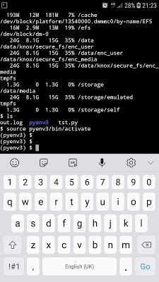
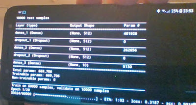
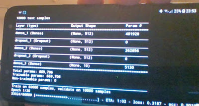

Android Uzerinde Linux - Termux
Not: Google Playstore'daki Termux artık desteklenmiyor, fakat hala
içinde ssh olan iskelet bir komut satırı kuruluşu yapılabiliyor.
Alttaki yazının bazı kısımları hala geçerli.
Android işletim sisteminin temeli Linux işletim sistemidir, en azından çekirdek seviyesinde bu böyle. Peki madem böyle niye Ubuntu'da, ya da diğer Debian bazlı sistemlerde olduğu gibi apt-get, python, ruby, komutlari ile ya da Flask gibi uygulamalari kurup, geliştirmeyi direk Android telefonu üzerinde yapamıyoruz? Hatta cep telefonları artık iyice kuvvetlendi, dizüstü bilgisayarı atsak, sadece cep telefonu üzerinde geliştirme yapsak?
Bunların yapılamamasının sebebi Linux temelli olsa da Android'de her şeyi Java bazlı işletebilmek için katman üzerine katman koyarak Linux baz sisteminden uzaklaşılmış olması. Fakat bazıları bayağı uğrarak Linux temelli geliştirmeyi Android'e taşımışlar. Google Play'den indirilebilecek bir uygulama Termux.
Termux'a bir "app" demek basit kaçar aslında, daha çok bir başlangıç kabuğu denebilir, Termux bize telefon içinde bir komut satırı verir, bu satırda apt install ya da pkg install ile ek uygulamaları Ubuntu'da olduğu gibi kurarız. Mesela apt-install python gibi. Termux'u yazanlar bir sürü Linux bazlı programı bu şekilde Android için hazır hale getirmişler. Liste tüm programları kapsamıyor, ama şaşırtıcı derecede faydalı programlar var. C++ icin clang, ya da Tex icin texlive hatta emacs! Ben denedim, yeterince buyuk ekran var ise cep telefon üzerinde emacs rahatca kullaniliyor. Tabii Samsung bu baglamda DevX sistemi ile / gibi dışarıdan bir Bluetooth klavyesi bağlayıp görüntüyü bir büyük ekrana yansıtacak türden kullanım dusunuyor, ki bu tür kullanım başta değindiğimiz pür cep telefon bazlı geliştirmedir.
Python sistemi daha once bahsedildigi gibi mevcut, pkg install python3 ardından, pip install virtualenv deriz, ve python3 için bir sanal ortam yaratabiliriz. Cep telefonu üzerinde virtualenv'e girmek bazılarımızı şaşırtabilir. Fakat işliyor.


Sanal ortama girince burada pip install ile ipython, numpy, scipy kurabiliriz. Bazı paketlerde sorun çıkabilir, mesela zmq için bizde bir sorun çıktı ki bu sorun jupyter ile de yasanabilir, once pgk install libzmq libzmq-dev python-dev libcrypt-dev kurulur. Ardından, eğer zmq import edilmesi problem veriyorsa, komut satırına çıkıp ana dizinde bir .bash_profile dosyası yaratıp onun içine alttakini yazarız,
export LD_PRELOAD=$LD_PRELOAD:"/data/data/com.termux/files/usr/lib/libzmq.so"
exit ile Termux'dan çıkıp tekrar girersek, artık zmq çalışıyor olacak.
Paketler pandas, matplotlib icin ek bazi kurma islemleri
pkg install clang freetype-dev libpng-dev python2-dev
Matpotlib icin $HOME/.config/matplotlib/matplotlibrc icinde backend :
agg yazmak lazim, komut satirindan cikip tekrar girin, sonra
LDFLAGS=" -lm -lcompiler_rt -lpython" pip install cython pandas matplotlib
Eger Python 2 ortami icin kurulum yapiliyorsa ustteki -lpython2.7 yapilabilir.
Geri Surum Paket
"Dışarısı" ile Dosya Paylaşmak
Termux kendi izole alanında işliyor. Eğer Android ana dizinlerine
Termux komut satırından erişmek istersek, termux-setup-storage
deriz, izin isteyen diyalog kutusu gelince ona 'allow (izin ver)'
deriz. Artık ana dizinde bir storage adlı bir alt dizin olacak, bu
alt dizine bakınca içinde downloads, movies, music gibi Anroid'in
bilinen dizinlerini göreceğiz. Bu dizinlere yazılan her dosya dışarıda
da gözükecektir. Ya da ters yönde oraya yazılan Termux'da okunur.
ssh var, dışarı bağlanılıp envai türden iş yapılabilir. Kimisi web
geliştirmeyi DevX üzerinden direk telefonda yapıyor, flask, django
var, mikroservis ya da apache başlatılabilir, yerel servis yerel
tarayıcı ile ziyaret edilip sayfalar, servis tarafı kodu test
edilebilir.
Veri tabanlarına bağlanmak için PostgreSql var. pkg install
postgresql-dev python-dev make clang, ve python seviyesinde pip
install psycopg2. Yok yok.
Tüm Termux dizinlerini yedeklemek için
https://wiki.termux.com/wiki/BackingupTermux
Latex
pkg install texlive ile kapsamli bir TeX kurulabilecegini gorduk. Ama ekler icin TeX paket sistemi ile kurulus mumkun, tlmgr install [paket]. Ama ayri ayri her paket kurmak yerine daha rahati
tlmgr install collection-fontsrecommended
tlmgr install collection-latexextra
tlmgr install collection-mathscience
isletmek.
Scipy
Bu paket cok kritik, mesela statsmodels icin lazim. Fakat pip install ile kurulumda problem cikiyor. Termux'ta paket
pkg install scipy
ile kurulabilir. Fakat böyle yapınca kurulum global python için
oluyor, virtualenv ortamlarında nasıl görülecek? Bunu basit bir
sembolik bağlantı ile halledebiliriz, global python'a girip import
scipy ve print (scipy) derseniz kütüphane yeri gösterilecek. Bu adresi
alıp mesela env3/lib/site-packages altında ln -s ile bağlantılarsanız
(ki scipy dizini orada görülsün) scipy işleyecektir.
Simdi bir puruz ortaya cikabilir; Eger pip install keras ile kurulus
yapmaya calisirsak bazen bu ve benzeri paketler scipy'in zaten kurulu
oldugunun farkedemeyebiliyorlar. Bu durumda bu
paketleri --no-dependencies secenegi ile kurmak lazim. Tabii boyle
olunca gercekten ihtiyac olan paketleri kurmadan atlayacaktir, keras
durumunda bu paketleri teker teker elle kurmak lazim. Mesela
pip install theano --no-dependencies
pip install keras-applications --no-dependencies
pip install keras-preprocessing --no-dependencies
Tum bunlardan sonra keras ayni sekilde kurulur.
Keras icin arka plan hesap motorunu theano sectirmek icin kodun en basinda alttaki kullanilabilir.
import os; os.environ['KERAS_BACKEND'] = 'theano'
Arka plan motor Tensorflow da olabilir, ona girmiyorum, cunku Termux ile problem cikti. Fakat Keras isliyorsa (theano uzerinden) bu yeterli olabilir. Altta basit ornek bir YSA'yi Keras ile telefonum uzerinde egitirken goruyoruz.
 

Pillow
Her paketin sanki Termux'a has bir kurulus sekli var :) Pillow kurulumu hata verirse,
pkg install python python-dev libjpeg-turbo-dev libcrypt-dev ndk-sysroot clang
LDFLAGS="-L/system/lib/" CFLAGS="-I/data/data/com.termux/files/usr/include/" pip install Pillow
h5py
Keras'in modellerini kaydettigi h5 formati icin pkg
install libhdf5-dev ve pip install h5py.
Samsung
Fakat Termux yine de izole bir ortam. Docker'vari daha geniş kapsamlı Linux işletmek için Samsung kolları sıvadı ve Linux on Galaxy adlı bir proje üzerinde çalışıyorlar. Bu şekilde telefon, tablet sahibi geliştiricileri kendilerine çekmeye uğraşıyorlar, ekonomik kısmı mantıklı.
Ekler
İki sene bu ortamda yoğun şekilde çalıştıktan sonra şunu söyleyebilirim, Termux'u servis bazlı bile olarak tamamen Linux yerine geçirmek çok zor. Bu tür ihtiyaçlara (tamamen mobil, hafif bilgisayar) en iyi seçenek Raspberry Pi. Pi tam tekmilli bir Ubuntu Linux'tur, hafiftir, Wifi'ni otomatik bağlanacak şekilde hep açık tutarsak ve cep telefonu Wifi paylaşımı hotspot üzerinden İnternet erişimi sağlarsak, yerel ağ da oluşturabiliriz, ve telefondan ssh, scp ile bağlanıp 'servis' olarak RPi kullanabiliriz. Bluetooth klavye + Telefon + Pi tasinabilir bir Linux ortami saglar.